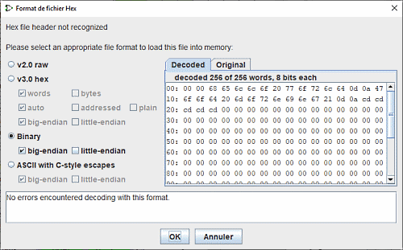

לוח קבצי זיכרון
חלון זה נפתח כאשר זיהוי הקבצים לא מצליח לקבוע את סוג מבנה הנתונים. הוא מורכב מא סדרה של תיבות סימון לציון אפשרויות ההמרה. שתי כרטיסיות תצוגה הקסדצימליות המציגות את נתוני הקובץ ו תיבת טקסט המציגה שגיאות שאולי זוהו.

ארבעת לחצני הבחירה משמשים לבחירת אחד מסוגי מבנה הקבצים המוצגים למעלה. עבור כל סוג תיבות סימון
יופעל. הם מאפשרים לך לציין אפשרויות ספציפיות.
תוכל למצוא מידע בדפים המוקדשים לסוגים אלה
- v2.0 raw
- v3.0 מילות hex רגילות/כתובות
- v3.0 hex bytes big-endian/little-endian
- נתונים בינאריים big-endian/little-endian
- Ascii byte escape big-endian/little-endian
לוח התצוגה ההקסדצימלי מאפשר לך לראות כיצד Logisim מפענחת את הקובץ.

והשוו אותו לגרסה המקורית שלו.

למטה יהיה לך דוח על הפענוח וכל השגיאות שנמצאו.